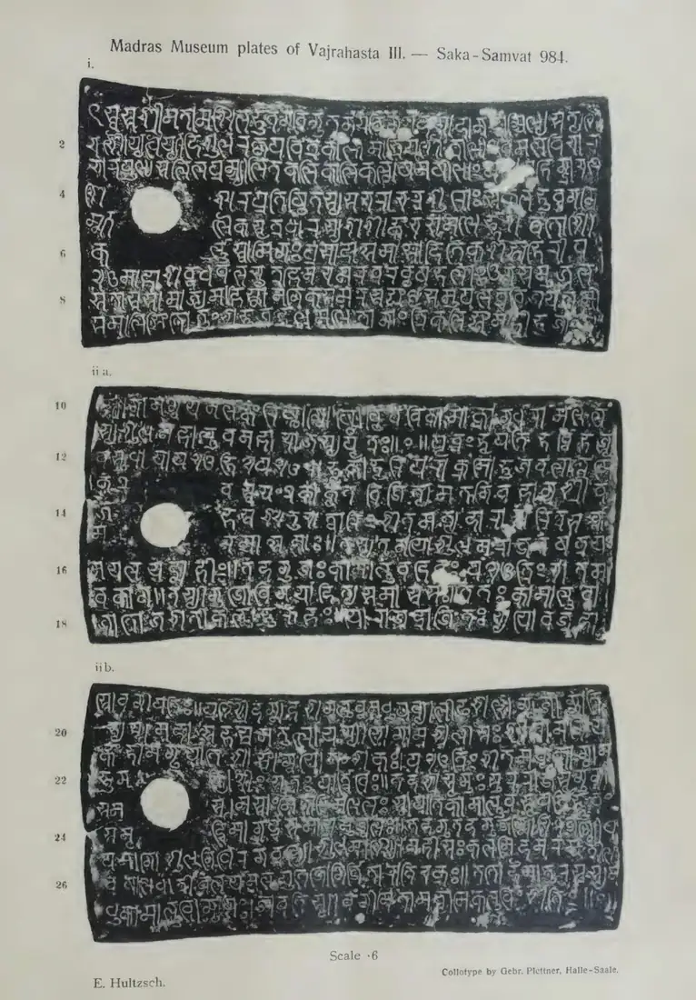
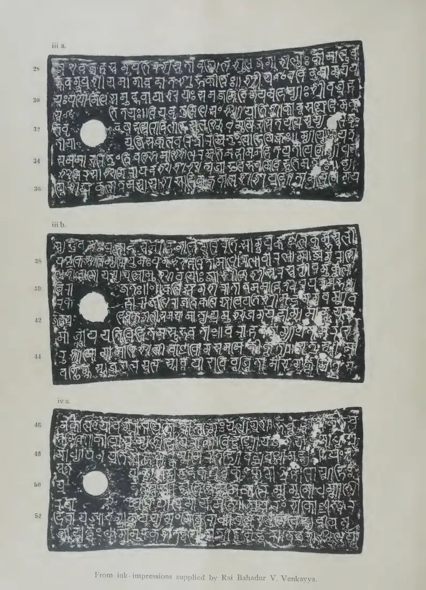

Madras Museum plates of Vajrahasta III
MADRAS MUSEUM PLATES OF VAJRAHASTA III. ;
SAKA-SAMVAT 984.
BY STEN KONOW, PH.D. ; CHRISTIANIA.
This inscription is found on a set of copper-plates which have been deposited in the Madras Museum. I do not know where they have been originally found. I publish the inscription from excellent ink-impressions3 supplied by Rai Bahadur V. Venkayya, M.A., who describes the plates as follows :—
“The plates are five in number. The first bears writing on the inner side only. The last is completely blank ; it was evidently put in to protect the single line of writing on the second side of the fourth plate. The plates have slightly raised rims (though in certain places these are either beaten down or worn away) and are strung on a ring, the ends of which are soldered into the lower part of a round seal. About the middle of the seal is a seated Nandin, whose tail extends to the bottom of the seal. From either side of the hind part of the Nandin proceed what may be taken for lotus buds. On the proper left of the Nandin are two flag-staffs placed one by the side of the other, with a bowl above them ; and on the proper right of it are a conch, a lampstand and a dagger. The ring was cut by me. It is not quite circular. The diameter varies between 5” and 4 1/2”. The thickness of the ring is 5/8”. The seal is roughly 2 1/2” in diameter. The following measurements of the plates show that, as regards breadth, they are slightly bigger in the middle than at the ends, while, as regards height, the reverse is the case :—
| Average breadth of plates | . | . | . | . | . | . | . | . | . | 9 1/4” | 9 1/2” | 9 1/4” |
| Average height of plates | . | . | . | . | . | . | . | . | . | 4 1/2” | 4” | 4 1/2” |
The fourth plate is comparatively small in height, measuring 4 1/4” at the ends and almost 4” in the middle.”
The inscription consists of 54 lines. The greater part is in a good state of preservation. The fourth plate, however, is rather corroded, and some passages of it can only be read with difficulty.
The alphabet is Nâgarî of the same kind as in the Nadagâm plates of Vajrahasta of Śaka-Samvat 979.4 The class nasal, and not the Anusvâra, is used before class mutes. Exceptions from this rule are °त्तीचंग° in l. 9, and पंच° in l. 48. Consonants are doubled after r, except in °निर्जिता°, l. 26. च is written for च throughout. स has been substituted for प्र in महीसः, l. 25, and °सत°, l. 49. On the other hand, we find प्र for स in °यीतंप्रकः, l. 21, आशीने, l. 39, and °रवस्थं, l. 54. A nasal with a following guttural or palatal is written in the same way as in the Nadagâm plates. Note further such writings as समुञ्जलं, ll. 7 and 24, प्रच्यालित instead of प्रचालित, l. 3, and प्रचोदन्मद° instead of प्रभ्योतन्मद°, l. 19.
1 The word niyadi is apparently synonymous with niṣadam which occurs frequently in the Tanjore inscriptions, and with niṣadi in the Trichinopoly cave epigraph of Varagupa (Director-General's Annual for 1903-4, p. 275, text line 19).
2 In later inscriptions the phrase neduñ-gálamum is replaced by the Sanskrit chandrâdityavat, ‘as long as the moon and the sun (endure).’
3 Since the above was written, I have had an opportunity of inspecting the original plates together with Mr. Venkayya.
4 Above, Vol. IV. p. 183 ff.
The language of the inscription is Sanskrit. It contains the same twelve verses as the Nadagâm plates of Śaka-Samvat 979. The remainder of the inscription is in prose. The first 41 lines are almost identical with the corresponding portion of the Nadagâm plates. They are, however, more carefully engraved and give several passages in a more correct form.
The inscription is one of king Vajrahasta (III.), the son of Kâmârnava (II.) of the Gânga lineage, and of Vinayamahâdêvi of the Vaidumba family. His genealogy is given in the same words as in the Nadagâm plates, from Guṇamahârnava downwards, including the date of Vajrahasta's coronation.1 The inscription then goes on to state (l. 40 ff.) that 'the devout worshipper of Mahâśvara (Śiva), the Paramabhattâraka Mahârâjâdhirâja, the lord of the three Kaliñgas, the glorious Anantavarman Vajrahastadêva, being in good health, issues the following order from Kaliñganagara, having called together all the subjects, headed by the ministers:'—"Be it known to you (that), for the increase of the religious merit and fame of (Our) mother, father, and Ourself, the village named Tâmaracheru in Varâhavartani, combined with the Chikhali hamlet (vâṭaka), circumscribed by the four boundaries, including water and land, free from all molestation, to last as long as the moon, the sun, and the earth, has been granted by Us, with libations of water, as an Agrahâra, to five hundred learned Brâhmaṇas who delight in the six acts of sacrificing, conducting sacrifices, studying, teaching, [giving] and accepting, (and) who are well versed in sacred lore, in the Śaka year of the dice (4), the Vasus (8) and the treasures (9), on the occasion of an eclipse of the sun. Therefore (Our gift) should be preserved by future kings in compliance with the law proclaimed by Manu. Moreover, land with the produce of two hundred Murakas of grain has been given, to last as long as the moon and the sun, free from hindrances, to the god Kôṭiśvara2 for (the maintenance of the rites of) Bali, Charu, Naivedya, Dipapûjii, and so on. And the repairs of what is broken and torn in this (temple) should without fail be effected by the Brâhmaṇas living there."
The inscription does not add anything to our knowledge of the history of king Vajrahasta III. We only learn that he also had the name Anantavarman, like his grandson Chôdagangâdêva.
Of the localities mentioned in the inscription, Kaliñganagara has been identified by Mr. Ramamurti3 with the villages Mukhaliñgam and Nagṛrakaṭakam in the Ganjam district. Varâhavartanî occurs in several Gânga grants.4 The village of Tâmaracheru is also known from Gânga inscriptions. Its boundaries are given in the Chicacole plates of the Mahârâja Dêvendravarman,5 in which the village Tâmarachheru is granted to three hundred Brâhmaṇas on the occasion of an eclipse of the sun. The Chicacole plates of the Gânga Mahârâja Indravarman, issued from Kaliñganagara in Gângâya-Samvat 128,6 further state that the village of Tâmaracheruva was granted to certain Brâhmaṇas on the occasion of an eclipse of the moon on the full-moon day of Mârgasîra. The latter inscription mentions Tâmaracheruva-grâmanî bâ(vâ)ṭakâ(ka)-sahita[m] (l. 8 f.). This vâṭaka is perhaps identical with the Chikhali-vâṭaka of our inscription. The village of Tâmaracheru has not as yet been identified. It should be looked for in the neighbourhood of Chicacole.
The date of the grant is found in a part of the inscription which has not been so well preserved as the rest. The first word is scarcely legible in the ink-impression. After a careful examination of the original, however, Mr. Venkayya and myself find that the reading kritu is certain. The date of the inscription is accordingly the Śaka year 984. If we take this to be
1 Above, Vol. IV. p. 185; Vol. V. Appendix, p. 50, No. 355.
2 This was evidently the name of the temple of Śiva at Tâmaracheru.
3 Above, Vol. IV. p. 187 f.
4 Above, Vol. III. p. 127, note 5; Vol. V. p. 185, note 5, etc.
5 Ind. Ant. Vol. XIII. p. 273 ff.
6 Ibid. p. 119 ff.
the current Śaka year, the date would correspond to A.D. 1061-62. Professor Kielhorn has been good enough to inform Professor Hultzsch that the only eclipse of the sun which was (slightly) visible in Ganjam between the Śaka years 980—989 took place on the 20th June A.D. 1061. This would therefore be the date of our inscription.
TEXT.1
First Plate.
- 1 श्रीं2 स्वस्तं3 श्रीमतामखिलभुवनविनुतनय[विनयद]यादान[दा]क्षिण्यसत्य[शौ]-
- 2 चशौर्यधैर्यादिगुणरत्नपवित्रकाणामात्रेयगोत्राणां विमलविचारा-
- 3 चारपुण्यसलिलप्रच्यालितकलिकालिकत्सम्प्रमप्रीणां4 [महाम]हेन्द्राचल-
- 4 शिखरप्रतिष्ठितस्य सचराचरगुरोः सकलभुवननि-
- 5 मार्गणैकसूत्रधारस्य 5शशाङ्क[चू]डांमणेभर्भगवतो गो-
- 6 कर्ण्णसामिनः प्रसादात्समासादितैकशङ्कभेरीप-
- 7 6ञ्चमाहाशब्दधवलच्छत्रहेमच[१*]मरवरवृषभलाञ्छनसमुज्वल-
- 8 7सत्यस्तसाम्राज्यमाहिस्मामनेकसमरसङ्घट्टसमुपलब्धविजयलमो-
- 9 समालिङ्गितो[त्तं]ग[भु]जदण्डम[ण्डि]तानां त्रिकलिङ्गम[ही]भुजां [गा-]
Second Plate; First Side.
- 10 [ङ्गा]नामन्वयमलङ्करि[ष्णोर्विष्णोरि]व8 विक्र(१)माक्रान्तधरामण्डल-
- 11 स्य गुणमहार्ण्वमहाराजस्य पुत्रः ॥०॥ पूर्व9 भूपतिभर्विभज्य
- 12 वसुधा या पञ्चभि[:*] 10पञ्चधा भुक्ता भूरिपराक्रमो 11भुजवलात्त[१*]मे-
- 13 क एव स्वयं [१*] एकीकृत12 विजित्य मत्तनिवहान्13 श्रीव-
- 14 14ज्रहस्तश्चतुचात्वारिंशतमत्युदार(१)[स्म]रित्व[:*] सर्व्वा-
- 15 मरचीत्समाः ॥ [१*] तस्य तनयो गुण्डमराज15 [व]षत्रयं-
- 16 मप[१*]लयघ्नहीं ॥ तदनुजः कामार्ण्वदे[व]ः पञ्चत्रि[श]तम-
- 17 [व्द]कान16 ॥ तस्यानुजो विनयादित्य[:*] समाप्तसः17 ॥ ततः18 कामार्ण्ववा-
- 18 जातो जगतीक[त्यभू]रुहः [१*] योराजद्राजितः19 चयो वज्रह(१)-
1 From the original plates.
2 Expressed by a symbol.
3 Read स्वस्ति.
4 Read °प्रक्षालितकलिकाल°.
5 Read °चूडामणेभर्भ. The d-stroke is not visible in the ink-impression.
6 Read °महाशब्द°, °क्कृत्°, °समुज्वल°.
7 Read समस्त°, °महिम्ना°, °समुपलब्ध°, °लक्ष्मी°.
8 This looks like °ष्ठान्नीष्ठीर्विव.
9 Metre: Śârdúlavikriðita; read भूपतिभि°.
10 Before पञ्चधा the engraver began to write ञ्च, but subsequently cancelled it.
11 Read °बला°.
12 Read °क्षत्य.
18 Read शत्रुनिवहांश्क्री°.
14 Read °हसश्चतुश्चत्वा°, °रचिरतः.
15 Read °राजी वर्षत्रय-.
16 Read °मब्दकान्.
17 Read समाप्तिषः.
18 Metre: Ślóka; read °वाज्जाती.
19 Read °द्राजितच्छायी.
Plate 1 is bound after this page.
Plate 2 is bound after this page.
Second Plate ; Second Side.
19 स्तोवनीपतिः ॥ [२*] 1प्रश्नोदन्मदगन्धलुश्चमधुपव्यालीटगण्डा[न्ग]जान्नार्थि-2
20 भ्यस्समदात्सहस्रमतुलो य[स्थ]ागिनामग्रणी[: ।*] स(ः) [श्रीम]ाननिय-
21 ङ्गभीमनृपातिगाङ्गान्वयोतंशकः3 (I) पञ्चत्रिंशतमव्दकान्मम-4
22 भुनक्विपध्वी5 [स्तु]तः पार्थिवैः ॥ [३*] तदग्रस्तुः6 सुरराजस्तुना
23 समस्समस्तां [श*]मितारिमण्डलः [।*] स्म पाति कामार्ण्वभूपतिर्भुवं7
24 समृद्धिमानङ्समा8 समुज्वलः ॥ [8*] तदनु9 तदनुजन्मो10 चित्तजन्मो(प)-
25 पमानो गुणनिधिरनवद्यो गुण्डमाख्यो महीसः11 [।*] [स*]कलमिदमरत्तत्रीणि12
26 वर्षाणि धात्रीवलयमलघुतेजोनिर्जितारातिचक्रः ॥ [५*] ततो13 देमातुरस्तस्य म-
27 धुकामार्ण्ववो नृपः । अवति स्मावनीमेताम[व्द]ामिकर्ण्वविंशतिं14 ॥ [६*] ० ॥
Third Plate ; First Side.
28 अथ15 वज्रहस्तनृपतेरग्रसुतादखिलगुणजनाग्रण्यः [।*] कामा[र्णवा]-
29 16त्कवन्दप्रगीयमानावदातशुभकीर्त्तेः ॥ [७*] श्रीय17 इव 19वैदुम्वान्वय[प]-
30 यःपयोनिधिसमुद्भवायाश्च [।*] य(ा)ः समजनि 19विनयम्[हा*]देव्याः श्रीवज्रह-
31 स्त इति त[न*]यः ॥ [८*] 20वियदृतुनिधिसंख्या21 याति 22शाकाव्दमङ्घे दिन[क्क]-
32 [ति] व्वृषभस्ते23 रोहिणीमे सुलग्ने [।*] धनुषि च सितपये24 सूर्य्य[वारे] त-
33 तीयांयुजि25 सकलवरित्री रक्षितुं योभिषिक्तः ॥ [९*] न्यायेन26 यत्र
34 सममाचरितुं त्रिवर्गे27 मार्गेण रक्षिति महीम28 महितप्रतापे [।*] नि-
[व्यर्या]धय-
35 श्च निरसाश्च20 निरापदश्च शश्चत्पजा30 भुवि भवन्ति विभूतिमत्यः ॥ [१०*] व्या-31
36 मे 32गङ्गकुलोत्तमस्य स्यशसा33 दि[क्क]क्रवाले शशिप्रद्योतामलिनेन य-
Third Plate ; Second Side.
37 स्य भुवन(ः)प्र[ह्व]ादसम्पादिना [*] मिन्दूरैरतिसान्द्रपङ्क[प*]टलै[*] [कुम्भ]स्थली-
38 पट्टके[ष्व]ालिम्पन्ति पुनः पुनश्च हरितामाधोरणा वारणान31 ॥ [११*] 35अनुरागे-
| 1 Metre : Sârdûlavikrâdita ; read प्रश्न्योत०, °लुच्च०. | 2 Read °न्गजानर्थि- | |
| 3 Read °नृपतिर्गाङ्गान्वयोत्तंसकः. | 4 Read °मन्द्रकान्मम-. | 5 Read भुनक्पृष्टवीं. |
| 6 Metre : Varnâsastha. | 7 Read °र्भुवं. | 6 Read °समां समुज्वलः. |
| 9 Metre : Mâlinf. | 10 Read °जन्मा. | 11 Read महीशः. |
| 12 Read °रत्तचीणि. | 18 Metre : Ślôka ; read दैमा०. | 14 Read °मन्दानेकाम्रविंशतिं. |
| 15 Metre : Gîti. | 16 Read रक्वीन्द्र०. | 17 Metre : Gîti ; read श्रिय. |
| 19 Read वैदुम्बा०. | 19 Read विनयमहा०. | 20 Metre : Mâlinf. |
| 21 Read °संख्यां. | 22 Read शाकाव्द०. | |
| 29 Read वृषभस्थे. The second वृ 8eems to have been cancelled by the engraver. | ||
| 24 Read सितपचै. | 26 Read °यायुजि सकलधरित्रीं. | 26 Metre : Vasantatilaka. |
| 27 Read त्रिवर्गं. | 28 Read महीम. | 29 Read निरघाश. |
| 30 Read शश्चत्प्रजा. | 21 Metre : Sârdûlavikrâdita. | 29 Read गाङ्ग०. |
| 33 Read यशसा. | 34 Read °णान. | 35 Metre : Ślôka. |
39 ए गुणीनो1 यस्य वक्षोमुखावयो:2 [*] आशीने3 श्रीसरस्वत्यावनुकूले
40 विराजतः ॥ [१२*] ०॥ 4कलिङ्गनगरातारममाहेश्वरपरमभट्टा-
41 रक[म*]हाराजाधिराजत्रिकलिङ्गाधिपतिश्रीमदनन्तवम्मां व-
42 ज्ञहस्तदेव[:*] कुशली 5समस्तामात्त्यप्रमुखजनपदान्समा[ह्ण]य [स]-
43 मान्नापयति विदितमस्तु भवतां ॥ वराहव[र्त्त]न्यां । तामरचे-
44 रुग्रामो नाम (1) चिखलीवाटकेन6 सममेकीकृत्य ॥ चतुस्रीमा-
45 7वच्छिन्नसजलस्थलस्सर्वपीडाविवृज्जितमाचन्द्रार्क्ष्चितिस-
Fourth Plate; First Side.
46 मकालं यावन्मातापित्रोरात्मनः पुण्ययशोभि[वृद्धये कृत]व-
47 सुनिधिशाकाद्वे8 । सूर्ययहोपरागे । विद्वद्भगो य[ज]नया[ज]ना[ध्यय]-
48 नाध्यापन[दान*]प्रतिग्रहषड्मनिरतेभ्यो 9वह्नव[र्चो]मद्भगः ॥ पंच-
49 10सत[ब्राह्मणे]भ्य उदकपूर्वकं कृत्वाग्रहारोस्माभिः
50 प्रदत्तस्तस्माद्भाविभि[भूं]मि[पा]लैम्युनुनोधम्मांगौ-11
51 रवात्परिपालनीयमिति12 ॥ अपरं च । कोटीश्वर-
52 देवाय आचन्द्रार्क्षपर्यन्तं निर्विरोधा । 13वलिचरुनैवेद्यदीपपू-
53 जाद्यर्थे धान्यमुरकशतद्वयोत्पत्या14 भूमिहत्ता । तत्र च । खण्डस्फु-
Fourth Plate; Second Side.
54 टितभग्नघटनं 15तत्रस्थवाह्मणेरवस्यं कर्त्तव्यमिति ॥
1 Read गुणिनो.
2 Read °खाजयो:.
3 Read आसीने.
4 Read °नगरात्परमं.
5 Read °मात्यं.
6 The engraver had originally written °वाटकेन.
7 The engraver originally wrote °जस्थलस्थलं, but cancelled the first स्थ. Read °विवर्जितं; after the त an I has been cancelled.
8 Read °शाकाब्दे.
9 The reading of this word is very uncertain; read perhaps ब्रह्मवर्चीं.
10 Read शतब्राह्मं.
11 Read °भूमिपालैम्युनुनीक्तधर्मगौ-.
12 Read °पालनीय इति.
13 Read बलिं. 14 Read °त्पत्त्या.
15 The engraver seems to have begun to write तात्रं, but the d-stroke has been left unfinished; read °ब्राह्मणेरवस्यं,

